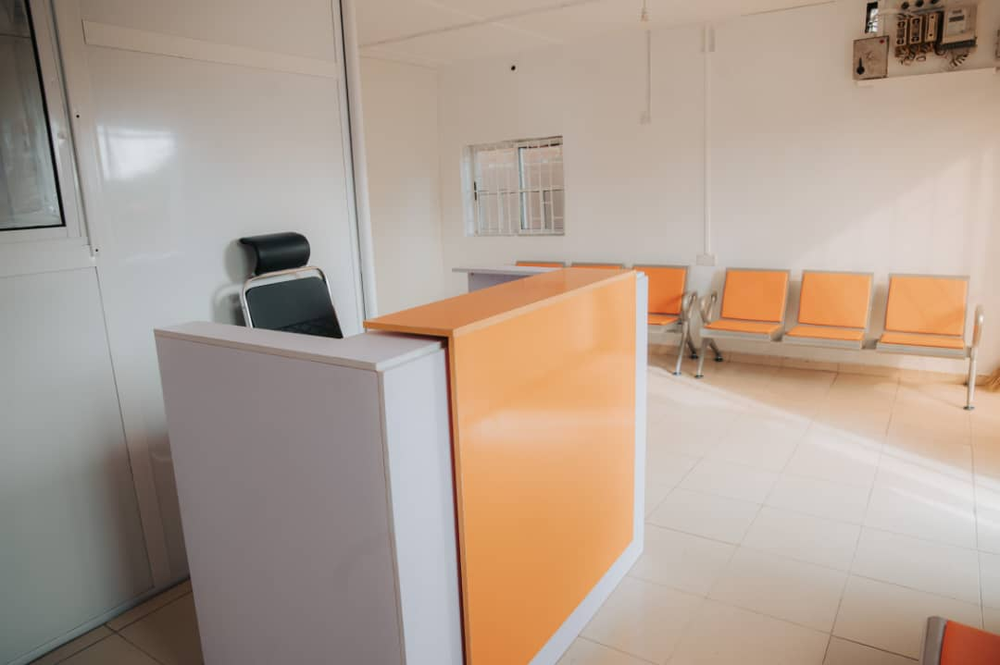

Ace Medical Services, centrally located in Bodija, Ibadan, is dedicated to redefining emergency and pre-hospital care with unwavering commitment. Our facility is strategically positioned in an accessible and central location, ensuring that we can provide prompt and efficient services to the entire Ibadan community. This prime location allows us to offer rapid response times, which are crucial in emergencies, and ensures convenience for our patients and their families.

Operating 24/7, Ace Medical Services seamlessly blends rapid ambulance response with cutting-edge diagnostic services. Our team of highly trained professionals is equipped with the latest medical technology and is always ready to deliver the highest standard of care. Whether it’s a medical emergency or routine diagnostics, we are committed to providing services that prioritize speed, precision, and compassionate expertise.
At Ace Medical Services, we understand that in moments of urgency, excellence in service can make all the difference. This is why we strive to combine our diagnostic capabilities with dedicated care, ensuring that every patient receives comprehensive and empathetic treatment.

At Ace Medical Services, urgency meets excellence. We are proud to be a part of the Ibadan community, offering top-tier medical services and a reliable healthcare partner when it matters most. Your health and well-being are our top priorities, and we are here to ensure you receive the best possible care, every time.
We serve the community and push to strive for the best possible treatment.